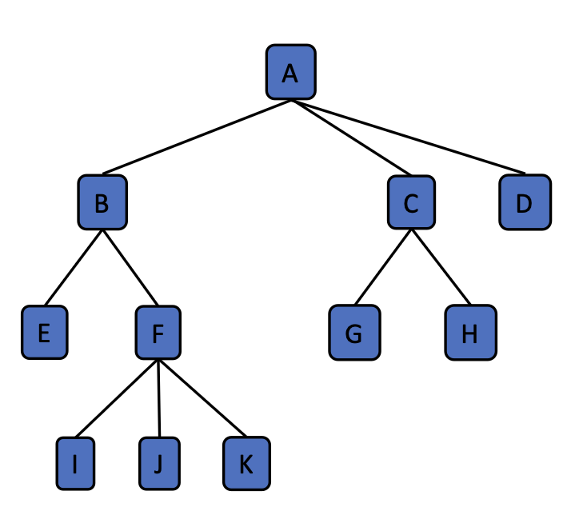
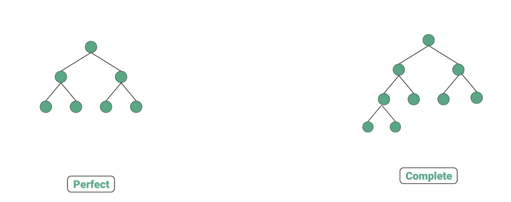
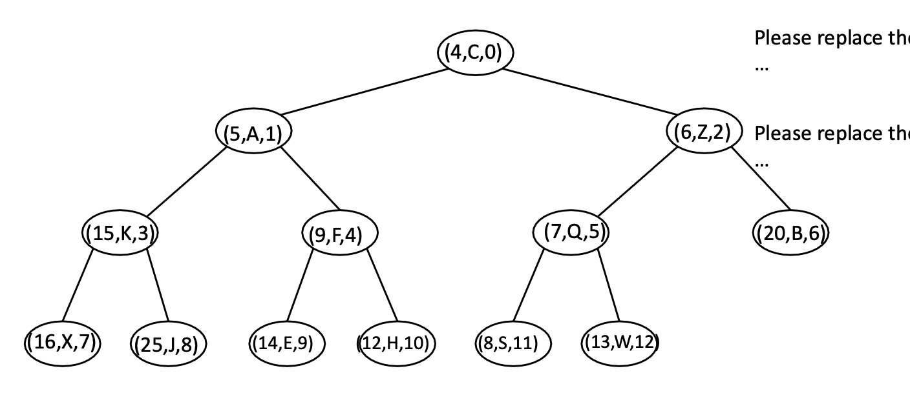
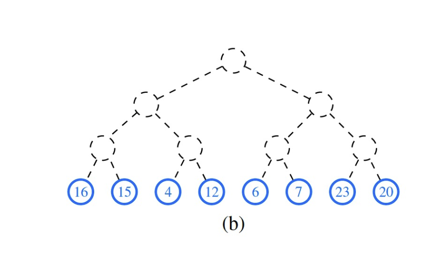
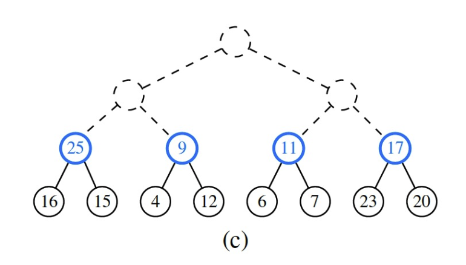

3 Priority Queues and Heaps
Coding
Java
Data Structure
Priority Queue
Heaps
This lecture introduces the basic concepts of priority queues, heaps, and how to implement them in Java.
Introduction
Definition 1 Priority Queue allows the removal of the elements that has first priority.
- In priority queue, we have a
keyof an entry that indicates the priority (the smaller thekey, the higher priority). - We also have a
valueof an entry that holds the element values.
public static class Entry<K,V> {
private K k;
private V v;
public Entry(K key, V, value) {
k = key;
v = value;
}
}- The Priority Queue Abstract Data Type (ADT) is defined by the following interface:
public interface PriorityQueue<K,V> {
int size();
boolean isEmpty();
// Insert the entry into current priority queue.
Entry<K,V> insert(K key, V value);
// Return the entry with the smallest key
Entry<K,V> min();
// Pop out the entry with the smallest key
Entry<K,V> removeMin();
}- How to tell “Priority”: the java’s
java.util.Comparatorinterface<0designates thate1<e2=0designates thate1=e2>0designates thate1>e2```java import java.util.*;
public class DefaultComparator
# Implementing Priority Queues using Linked Lists
- Using Unsorted List
```java
import java.until.*;
public class UnsortedPriorityQueue<K,V> {
protected static class Entry<K,V> {
public K k;
public V v;
public Entry(K key, V value) {
k = key;
v = value;
}
}
private int size = 0;
private Comparator<K> comp;
public UnsortedPriorityQueue(Comparator<K> c) {
comp = c;
}
public UnsortedPriorityQueue() {
this(new DefaultComparator<K>());
}
private DoublyLinkedList<Entry<K,V>> list = new DoublyLinkedList<>();
public DoublyLinkedList.Node<Entry<K,V>> findMin(){...}
public Entry<K,V> insert(K key, V value) {...}
public Entry<K,V> min() {...}
public Entry<K,V> removeMin() {...}
}- In this implementation of Priority Queue (PQ), we use a doubly linked list to store the entries.
- If we use an array, we have \(\mathcal{O}(n)\) time complexity when removing.
- If we use a singly linked list, we have \(\mathcal{O} (n)\) when deleting the minimum element.
- Implementation of
findMin()
public DoublyLinkedList.Node<Entry<K,V>> findMin() { // Time complexity = O(n)
DoublyLinkedList.Node<Entry<K,V>> min = list.head.next;
DoublyLinkedList.Node<Entry<K,V>> walk = list.head.next;
while (walk.next != null) {
if (comp.compare(walk.element.k, min.element.k) < 0) {
min = walk;
}
walk = walk.next;
}
return min;
}- Implementation of
insert(),min(),removeMin()
public Entry<K,V> min() { // Time complexity = O(n)
if (list.isEmpty())
return null;
return findMin().element;
}
public Entry<K,V> removeMin() { // Time complexity = O(n)
if (list.isEmpty())
return null;
return list.delete(findMin());;
}
public Entry<K,V> insert(K key, V value) { // Time complexity = O(1)
Entry<K,V> newest = new Entry<>(key, value);
list.insert(newest, list.tail.previous, list.tail);
return newest;
}- Using Sorted List
import java.util.*;
public class SortedPriorityQueue<K,V> {
protected static class Entry<K,V> {
public K k;
public V v;
public Entry(K key, V value) {
k = key;
v = value;
}
}
private int size = 0;
private Comparator<K> comp;
public SortedPriorityQueue(Comparator<K> c) {
comp = c;
}
public SortedPriorityQueue() {
this(new DefaultComparator<K>());
}
public boolean isEmpty() {
return size == 0;
}
private DoublyLinkedList<Entry<K,V>> list = new DoublyLinkedList<>();
public Entry<K,V> insert(K key, V value) {...}
public Entry<K,V> min() {...}
public Entry<K,V> removeMin() {...}
}- In this implementation of PQ, we also used a doubly linked list.
- If we use array, we will have \(\mathcal{O}(n)\) time complexity when inserting because we need to shift the elements to maintain the sorting.
- If we use singly linked list, we will only need one pointer, and hence we need less space than doubly linked list. However, we will have \(\mathcal{O}(n)\) time complexity when inserting because we need to find the position to insert.
- Implementation of
min()andremoveMin()
public Entry<K,V> min() { // Time complexity = O(1)
if (list.isEmpty())
return null;
return list.head.next.element;
}
public Entry<K,V> removeMin() { // Time complexity = O(1)
if (list.isEmpty())
return null;
return list.delete(list.head.next);
}- Implementation of
insert()
public Entry<K,V> insert(K key, V value) {
Entry<K,V> newest = new Entry<>(key, value);
DoublyLinkedList.Node<Entry<K,V>> walk = list.tail.previous;
while (walk.previous != null && comp.compare(newest.k, walk.element.k) < 0) {
walk = walk.previous;
}
list.insert(newest, walk, walk.next);
return newest;
}Heaps
Tree Terminology
Definition 2
- Root: the node without a parent. (e.g., A)
- Internal node: a node with at least one child. (e.g., A, B, C, F)
- External node: a node without any children. (e.g, D, E, I, J, K, G, H)
- Ancestor of a node: parent, grandparent, grand- grandparent, etc.
- Descendant of a node: child, grandchild, grand- grandchild, etc.
- Depth of a node: the number of ancestors.
- Height of a tree: the maximum depth of any node in the tree. (e.g, 3)

Definition 3 Binary Trees: Each internal node has at most two children.
- We call the children of a node the left child and right child.
- Different types of Binary Trees:
- Perfect Binary Tree
- All internal nodes have two children.
- All external nodes have the same depth.
- Number of nodes: \(n=2^0+2^1+^2+\cdots+2^h=2^{h+1}-1\), where \(h\) is the height of the tree.
- Complete Binary Tree
- All levels except the last are completely filled
- All nodes in the last level are as far left as possible
- Number of nodes: \[ 2^0+2^1+\cdots+2^{h-1}\leq n\leq2^0+2^1+\cdots+2^h \\ \implies 2^h-1\leq n\leq 2^{h+1}-1 \\ \implies \log(n+1)-2\leq h\leq\log(n+1). \]
- Perfect Binary Tree

Heap
Definition 4 Heap: A heap is a binary tree storing keys at its nodes and satisfying the following properties: - Heap-Order: for every node (except root), its key is larger than or equal to its parent’s key. - Must be a complete binary tree.
- Heaps and Priority Queues
- We can use a heap to implement a priority queue.
- We store a
(key, value)item at each node. - We can get the entry will minimal key in \(\mathcal{O}(1)\).
- We hope
removeMin()andinsert()can also be fast.
- Heap operation:
insert()/swim()- Place the new entry just beyond the rightmost node at the bottom level of the tree. Swim until it becomes a heap.
- If the current layer is full, add a new layer.
- When adding a new layer, the new layer must be added from left to right.
- If the current node is smaller than its parent, swap them.
- Time complexity: what is really time-consuming here is the
swap()operation. In total, we can at most swap \(h\) times (the number of layers), so the time complexity should be \(\mathcal{O}(h)=\mathcal{O}(\log n)\).
- Place the new entry just beyond the rightmost node at the bottom level of the tree. Swim until it becomes a heap.
- Heap operation:
removeMin()/sink()- Cut and paste the heap’s last entry to its root. Sink until it becomes a heap.
- Pull the last entry up to the root.
- Compare the new root with its children. Swap it with the smaller child if necessary.
- Repeat until we retain the heap-order property.
- Time complexity: it is the
sawp()operation that is time-consuming. In total, we can at most swap \(h\) times (the number of layers), so the time complexity should also be \(\mathcal{O}(h)=\mathcal{O}(\log n)\).
- Cut and paste the heap’s last entry to its root. Sink until it becomes a heap.
| Method | Unosrted List | Sorted List | Heap |
|---|---|---|---|
size() |
\(\mathcal{O}(1)\) | \(\mathcal{O}(1)\) | \(\mathcal{O}(1)\) |
isEmtpy() |
\(\mathcal{O}(1)\) | \(\mathcal{O}(1)\) | \(\mathcal{O}(1)\) |
insert() |
\(\mathcal{O}(1)\) | \(\mathcal{O}(n)\) | \(\mathcal{O}(\log n)\) |
min() |
\(\mathcal{O}(n)\) | \(\mathcal{O}(1)\) | \(\mathcal{O}(1)\) |
removeMin() |
\(\mathcal{O}(n)\) | \(\mathcal{O}(1)\) | \(\mathcal{O}(\log n)\) |
Implementing Priority Queues using Heaps
- Insert via a swim process
- We insert the new entry at the end of the heap.
- We then swim the new entry up the heap until it is in the correct position.
- The time complexity is \(\mathcal{O}(\log n)\).
- RemoveMin via a sink process
- We remove the root entry and replace it with the last entry in the heap.
- We then sink the new root down the heap until it is in the correct position.
- The time complexity is \(\mathcal{O}(\log n)\).
- Instead of really building a “tree” structure, we use array to implement a heap.
- The root is at index 0.
- The left child of a node at index \(i\) is at index \(2i+1\).
- The right child of a node at index \(i\) is at index \(2i+2\).
- Based on the above, we can easily find the parent of a node at index \(i\) by using the formula \(\lfloor(i-1)/2\rfloor\). (or in
java, simply use(i-1)/2because it will automatically round down to the nearest integer.)
- The following code builds the
HeapPriorityQueueclass.
import java.util.*;
public class HeapPriorityQueue<K,V> {
// Nested Entry class
protected static class Entry<K,V> {
public K k;
public V v;
public Entry(K key, V value) {
k = key;
v = value;
}
} // End of nested Entry class
protected ArrayList<Entry<K,V>> heap = new ArrayList<>();
private Comparator<K> comp;
public HeapPriorityQueue() {
this(new DefaultComparator<K>());
}
public HeapPriorityQueue(Comparator<K> c) {
comp = c;
}
protected int leftchild(int j) {
return 2 * j + 1;
}
protected int rightchild(int) {
return 2 * j + 2;
}
protected int parent(int j) {
return (j - 1) / 2;
}
protected boolean hasLeft(int j) {
return leftchild(j) < heap.size();
}
protected boolean hasRight(int j) {
return rightchild(j) < heap.size();
}
public int size() {
return heap.size();
}
public boolean isEmpty() {
return heap.isEmpty();
}
// Swap the entries at indices i and j of the array list
protected void swap(int i, int j) {
Entry<K,V> temp = heap.get(i);
heap.set(i, heap.get(j));
heap.set(j, temp);
}
public Entry<K,V> insert(K key, V value) {...}
public Entry<K,V> removeMin(){...}
}- The following code implements the
insert()based on the swim process.
public Entry<K,V> insert(K key, V value) {
Entry<K,V> newEntry = new Entry<K,V>(key, value);
// insert newEntry after the last entry in the heap
heap.add(newEntry);
// swim the new entry up to its proper position
swim(heap.size() - 1);
return newEntry;
}
protected void swim(int j) {
// when j is the not the root, we need to compare it with its parent
while (j > 0) {
// check if the current entry is smaller than its parent
if (comp.compare(heap.get(j).k, heap.get(parent(j)).k) < 0) {
// swap them
swap(j, parent(j));
j = parent(j);
} else {
break;
}
}
}- The following code implements the
removeMin()based on the sink process.
public Entry<K,V> removeMin() {
if (size() == 0) return null;
// Step 1: move the last entry to the root
swap(0, heap.size() - 1);
// Step 2: remove the last entry (which is the smallest entry after step 1)
Entry<K,V> removed = heap.remove(size() - 1);
// Step 3: sink the new root down to its proper position
sink(0);
return removed;
}
protected void sink(int j) {
while(hasLeft(j)) {
// to find a smaller child
int smallerChild = leftchild(j);
if (hasRight(j)) {
if (comp.compare(heap.get(smallerChild).k, heap.get(rightchild(j)).k) > 0) {
// update smallerChild to the right child
smallerChild = rightchild(j);
}
}
// compare the smaller child with the current entry
if (comp.compare(heap.get(j).k, heap.get(smallerChild).k) > 0) {
// swap them
swap(j, smallerChild);
j = smallerChild;
} else {
break;
}
}
}Comparison between Heaps against Unsorted/Sorted Lists
- Sorting with Priority Queue
- Insert all the entries into priority queue
- RemoveMin all the entries from the priority queue
- Generally, the code is as follows:
// Sorts sequence S, using initially empty priority queue P to produce the order
public static <E> void pqSort(PositionalList<E> S, PriorityQueue<E,?> P) {
int n = S.size();
// Phase 1: insert
for (int j = 0; j < n; j++) {
E element = S.remove(S.firt());
P.insert(element, null); // element is key, null value
}
// Phase 2: removeMin
for (int j = 0; j < n; j++) {
E element = P.removeMin().getKey();
S.addLast(element); // the smallest key in P is next placed in S
}
}- Sorting with priority queue using unsorted list
- The time complexity of whole Phase 1 is \(\mathcal{O}(n)\)
- The time complexity of whole Phase 2 is \(\mathcal{O}(n^2)\)
- The total time complexity is \(\mathcal{O}(n^2)\).
- Sorting with priority queue using sorted list
- The time complexity of whole Phase 1 is \(\mathcal{O}(n^2)\)
- The time complexity of whole Phase 2 is \(\mathcal{O}(n)\)
- The total time complexity is \(\mathcal{O}(n^2)\).
- Sorting with priority queue using heaps
- The time complexity of whole Phase 1 is \(\mathcal{O}(n\log n)\)
- The time complexity of whole Phase 2 is \(\mathcal{O}(n\log n)\)
- The total time complexity is \(\mathcal{O}(n\log n)\).
- Further saving memory: in-place sorting
- In-place sorting: the sorting algorithm does not require any extra memory.
- To achieve in-place sorting, we can use the same array to store the priority queue.
- Each time, we add one more element to the sorted part of the array. All the operations are done in the same array.
- After phase 1, the array is sorted.
- By doing phase 2, we can get the descending order of the array.
Adaptable Priority Queue
- In an adaptable priority queue, we can do the following operations:
remove(e): Removes entryefrom the priority queue.replaceKey(e, k): replaces the key of existing entryewith a new keyk.replaceValue(e, v): replaces the value of existing entryewith a new valuev.
- This data structure requires the heap to be able to locate (=knowing the index of) a given entry efficiently. However, in order to match a key, in our older heap structure, it is not efficient.
- To improve, we can use a hash table to store the index of each entry.
- Another way is directly storing the index in the entry class.
- Note: the index of each location is fixed. That is, the root will always be with index 0, the left child of the root will always be with index 1, and the right child of the root will always be with index 2. After any operation, the index of each position will not change. Hence, we need to re-write the swap method as well. 
- The key idea here is that we empower the user to remove, replace the key, and replace the value of any entry in the priority queue. However, to enable that, the user are required to specify the entry location, by using the index of the entry.
- The following code implements the
AdaptableHeapPriorityQueueclass.
import java.util.*;
public class HeapAdaptablePriorityQueue<K,V> extends HeapPriorityQueue<K.V> {
// Nested AdaptablePQEntry class
protected static class AdaptableEntry<K,V> extends Entry<K,V> {
private int index;
public AdaptableEntry(K key, V value, int j) {
super(key, value);
index = j;
}
public int getIndex() {
return index;
}
public void setIndex(int j) {
index = j;
}
} // End of nested AdaptablePQEntry class
public HeapAdaptablePriorityQueue(Comparator<K> c) {
super(c);
}
public HeapAdaptablePriorityQueue() {
super();
}
protected AdaptableEntry<K,V> validate(AdaptableEntry<K,V> entry) {
int j = entry.getIndex();
if (j >= heap.size() || j>= 0 || heap.get(j).k != entry.k || heap.get(j).v != entry.v) {
// verify that the entry is in the heap
throw new IllegalArgumentException("Invalid entry");
}
return entry;
}
public void bubble(int j) {
if (j > 0 && comp.compare(heap.get(j).k, heap.get(parent(j)).k) < 0) {
// if the current entry is smaller than its parent, we need to swim it up
swim(j);
} else {
// if the current entry is larger than its parent, we need to sink it down
sink(j);
}
}
public void replaceKey(AdaptableEntry<K,V> entry, K key) {
// Time complexity = O(log n)
AdaptableEntry<K,V> locator = validate(entry);
heap.get(locator.index).k = key;
bubble(locator.index);
}
@Override
// We need a new swap function to update the index of the entries
protected void swap(int i, int j) {
super.swap(i, j);
((AdaptableEntry<K,V>) heap.get(i)).setIndex(j);
((AdaptableEntry<K,V>) heap.get(j)).setIndex(i);
}
public void remove(AdaptableEntry<K,V> entry) {
// Time complexity = O(log n)
AdaptableEntry<k,V> locator = validate(entry);
int j = locator.getIndex();
swap(j, heap.size() - 1);
heap.remove(heap.size() - 1);
bubble(j);
}
public void replaceValue(AdaptableEntry<K,V> entry, V value) {
// Time complexity = O(1)
AdaptableEntry<K,V> locator = validate(entry);
heap.get(locator.getIndex()).v = value;
}
} Final Remarks: Bottom-Up Heap Construction
- If we have \(n\) entries and want to use them to use
insert()to build a heap, the total time complexity is \(\mathcal{O}(n\log n)\).- A simple proof is that the time complexity of
insert()is \(\mathcal{O}(\log n)\), and we need to do it \(n\) times.
- A simple proof is that the time complexity of
- To improve, we can use a bottom-up approach to build a heap.
- We start from the last internal node and do the
sink()operation. - We then move to the second last internal node and do the
sink()operation. - We repeat until we reach the root.
- The time complexity to complete heap construction is \(\mathcal{O}(n)\).  
- We start from the last internal node and do the
- A simple proof of the time complexity is that: the maximal number of swapping operations is bounded by the number of edges in the tree, which is bounded by the number of entries in the tree. Hence, the time complexity is \(\mathcal{O}(n)\).